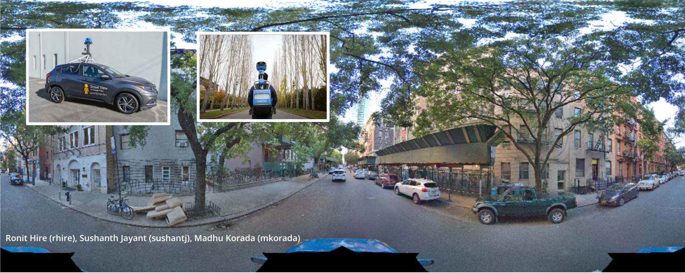
1. Introduction
In recent times, there has been a notable increase in the collection of street-level data facilitated by self-driving vehicles. The reconstruction and generation of novel views from such data is of practical significance in driving simulation, data synthesis, and applications in augmented and virtual reality. Even though there has been notable progress in novel view synthesis (NVS) for confined/indoor scenes, large-scale outdoor settings, including street views and parks, remain a persistent challenge. Despite being vast and publicly available, self-driving datasets like KITTI and Argoverse2 still remain under-explored in a large scale NeRF setting.
We explore the application of Neural Radiance Fields to generate novel street views, similar to the likes of Google Street View but without the need for special data acquisition and curation by leveraging the vast and open-source self- driving datasets like Argoverse2 and KITTI. To deal with the sparse camera views and biased straight line trajectories of the viewpoints in these datasets we use LiDAR maps as depths priors to help the NeRF model converge faster while also learning point embeddings for each location of the LiDAR point cloud. Furthermore, we propose diffusion guided optimization to modify these embeddings allowing us to render custom textures in the scene from user-defined prompts (shown below Figure 1) while maintaining geometric consistency across views. We test our approach on the Argoverse2 dataset and provide a qualitative as well as a quantitative comparison of the rendered scene against the ground truth images
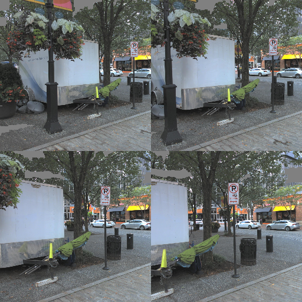
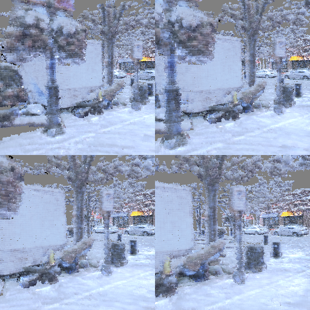
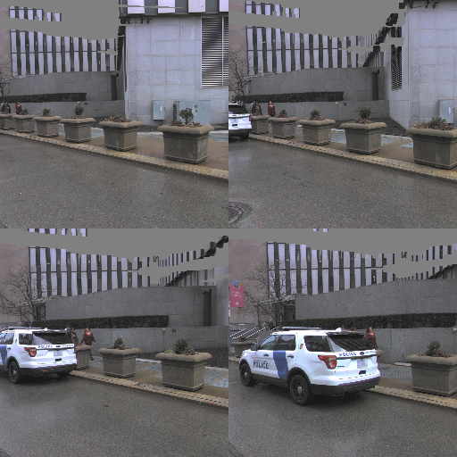
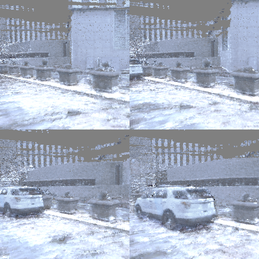
"streets covered in snow". The rendered images are blurry due to low resolution of the NeRF we used in our training.
Related Work
Large Scale NeRFs: Existing work on large scale NeRFs for outdoor and unbounded scenes as present in these
self-driving datasets includes MipNerf360 [1] and BlockNerf [2]. However, these approaches require a large number of dense and overlapping camera
views during training which is lacking in these common self-driving datasets. The problem of sparse views during
NeRF training has been dealt with by using depth information from multi-view stereo in [3, 4] and also by using LiDAR depth
in [5]
Conditional GANs: Another problem with these common camera-LiDAR datasets is the presence of noise in LiDAR points. [4]
proposed a 3d point cloud refinement but as demonstrated in [5], image refinement on the rendered NeRF image using
conditional GANs such as Pix2Pix also leads to high quality images. We follow the later approach in our pipeline.
Diffusion guided optimization: Stable diffusion [8] can create novel images guided by user prompts. Using stable
diffusion generated images to train a NeRF was first seen in DreamFusion [9]. It used Score Distillation Sampling (SDS)
to create a loss function that could provide gradients to the NeRF volume and finetuned it to match the diffusion
generated views. We use this idea of SDS loss and optimize the point embeddings for the LiDAR points as described in the next section.
2. Proposed Idea
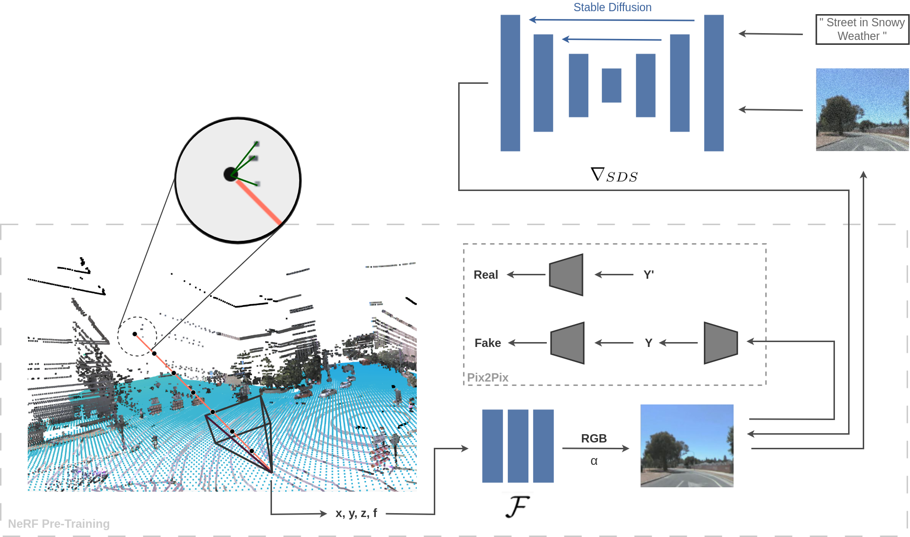
For the renderings of the street views to be adaptive to user prompts, the underlying neural radiance field representation of the scene must have localized tunable embeddings. PointNeRF introduced the idea of embedding features into each point of the point cloud representing the scene and we assign per-point features (\( f\)) directly to the available LiDAR point cloud. These features can then be aggregated along the rays from a novel viewpoint for volume rendering. However, this point-based volume rendering is not suitable for these open-source camera LiDAR datasets due to noise in the raw point cloud, non-uniform illuminations and other weather effects. Rather than refining the 3D point cloud during training to tackle these issues, we directly perform image refinement on the rendered image using a cGAN. We call this NeRF-pretraining in our approach and this process of volume rendering followed by image refinement is end-to- end trainable using an image-to-image translation GAN and outperforms the 3D point cloud refinement strategy as. NeRF-pretraining helps in defining a good prior for the point embeddings as well as for the scene geometry. We then perform diffusion guided optimization using SDS loss to finetune these point embeddings and generate new textures in the scene. The overall pipeline is shown in the figure above.
2.1 NeRF pretraining
Starting from LiDAR-image pairs in a sequence from the Argoverse2 dataset, all LiDAR maps from the sequence
are merged to have a single point cloud representation of the scene and point embeddings are assigned to each point
(resulting in neural points). The camera poses in the sequence then act as training views for the NeRF. We then perform
point-based volume rendering as described in the PointNeRF paper followed by image refinement using pix2pix on the rendered image.
The NeRF MLPs and the pix2pix generator is then trained in an end-to-end manner using a combination of L1 and adversarial losses.
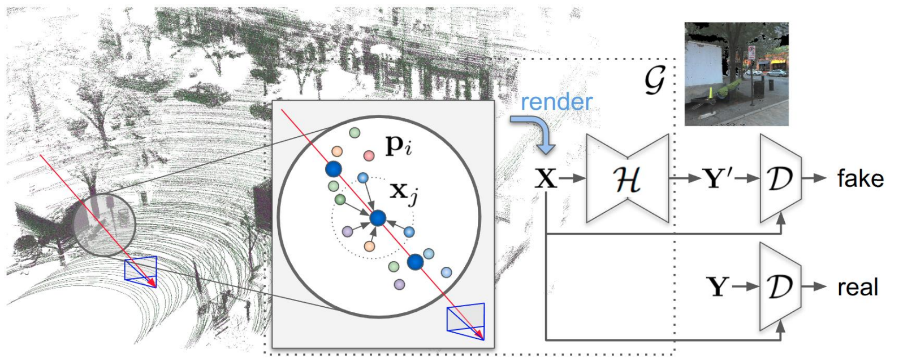
2.2 Diffusion guided optimization
After pretraining, For generating customized views of the streets, we propose the idea of finetuning the LiDAR point embeddings using Score Distillation Sampling (SDS). We use SDS loss to optimize the point embeddings such that the resultant NeRF renderings maximize the likelihood of being in the distribution of images defined by the user prompt. A rendered image from our pretrained NeRF is first noised upto a randomly sampled timestep \(t\). We then denoise it using DDIM and use the denoising gradients given by (\( \tilde{\epsilon_\phi} (x; t, e) - \epsilon \)) to optimize the underlying NeRF parameters (point embeddings \(f\) in our case), where \( \tilde{\epsilon_\phi} (x;\ t, e) \) is the classifier-free guidance score obtained by a linear combination of unconditional (prompt-free) and conditional scores. We experiment with different noise prediction functions \( \epsilon_\phi(x;t,e) \) such as stable-diffusion v2.1 and ControlNet v1.5 with canny (edge conditioning) and depth controls.
Novel renderings obtained from our method on selected sequences from the Argoverse2 dataset using different prompts is shown in the results section.
3. Evaluation and Experiments
We use the open-source camera-LiDAR dataset - Argoverse2 to obtain real-world camera views and LiDAR maps. Each sequence from the dataset consist of 3 camera views that have associated 20Hz lidar scans, poses and images. Every sequence has 155 training and 20 validation images. We evaluate our methods on 6 sequences from the dataset and present visual results on 2 of them.
3.1 Novel renderings of the streets based on user-prompts
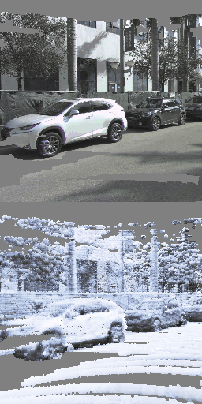
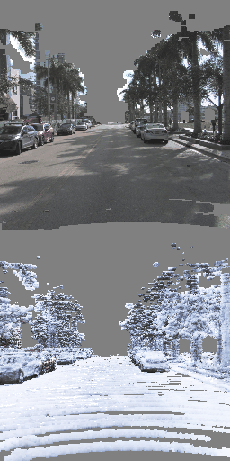
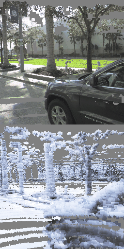
Bottom row shows the renderings from our method using the prompt "streets covered in snow" on the same street.
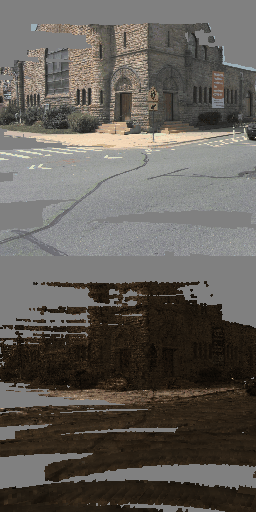
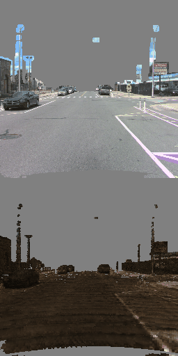
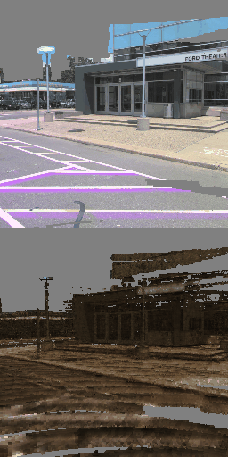
Bottom row shows the renderings from our method using the prompt "post apocalypse scene" on the same street.
3.2 Comparison with the baseline
Prior to this work, there has been limited exploration of diffusion guided NeRF optimization for outdoor
datasets and with user-defined thematic effects. Since our method leverages strong depth priors from the LiDAR data we choose our baseline to be
ControlNet (conditioned on depth masks) based editing of individual images based on the same user-prompt.
of the sequence. We compare our method with the baseline on the same sequences and show that our method generates geometrically consistent renderings.
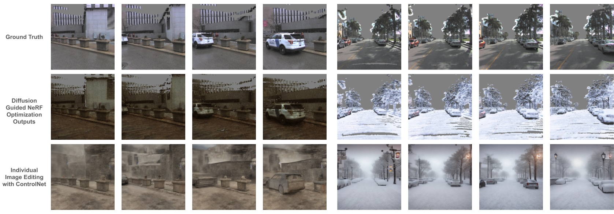
3.3 Quantitative Results
We experiment with three different noise prediction functions \(\epsilon_\phi(x;\ t,e)\) for SDS loss. Here we present a quantitative
comparison between the rendered images resulting from finetuning the point embeddings based on these functions and in the next section
we present a qualitative comparison (Figure 7).
Since most metrics for image quality depend on a comparison between ground truth and rendered image, we cannot
infer a direct comparative improvement from the absolute values of LPIPS or SSIM scores when there exists no
ground truth for our post-processed scene (’streets covered in snow’). Hence we use LPIPS and SSIM only as a
relative measure of qualitative deviations caused by these fine-tuning approaches. Empirically, the increase in LPIPS
for the prompt ’streets covered in snow’ corresponds to more snow in the scene. The quantitative results for each
approach is highlighted in Table 1 and Table 2 for the data sequences 1 through 6.
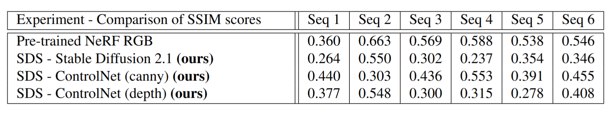 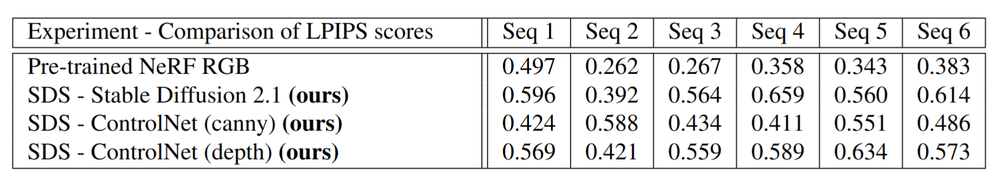
A high SSIM then indicates the ‘similarity’ between rendered image (with snow) and ground truth (without snow).
SSIM can also be viewed as a rough measure of how much SDS loss changes the scene. Sequence 3 in Table 1 shows
that the SSIM value of ControlNet (canny) output is higher than stable diffusion 2.1 and ControlNet (depth). The left
half of Fig 7 also shows how the canny image has not added much snow and remains more similar to the ground truth.
A high LPIPS score indicates the ‘dissimilarity’ between rendering and ground truth. Analysing sequences 3 and 6
(left and right half respectively of Fig 7) shows that the lack of snow added in the ControlNet (canny) images reflects
in the LPIPS score being lower and therefore less ’dissimilar’ to the ground truth.
3.4 ControlNet - canny and depth
Since the SDS loss derived from stable diffusion is purely directed by the text prompt, we only
optimize for only a few iterations (6 - 10) to prevent oversaturation. To overcome
this limitation, we experiment with additional conditioning with a reference image (depth image or canny edge image)
to help with
better convergence. This conditioning was carried out by using ControlNet as a noise prediction function and few ablations were run to compare the
results with the simple SDS loss from stable diffusion 2.1. However, due to high noise in canny edge images, and
inconsistencies in the pre-trained NeRF depth maps, the conditioning seems to have been insufficient and caused the
NeRF optimization to be poor when using ControlNet guidance for SDS loss. The figure below shows detailed comparisons.
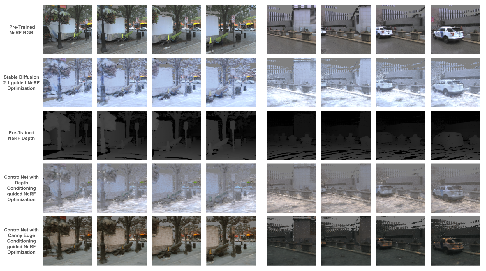
3.5 Guidance scale ablation
We ablate the guidance scale parameter during the SDS loss optimization for the same prompt on different sequences. A guidance scale of around 70 sufficiently
changes the texture of the scene while maintaining geometric consistency and scene structure. A higher guidance scale saturates the scene.
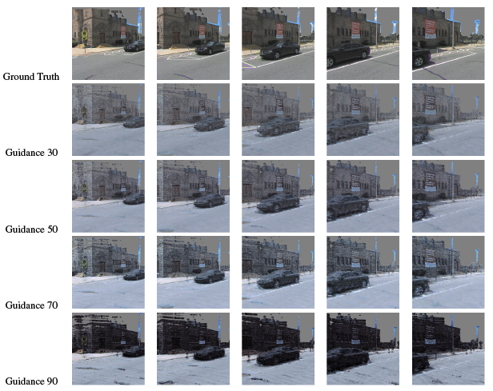
4. Challenges and Limitations
Self-driving datasets are extremely large in size and handling such vast amounts of data is often challenging. Even
though the data in conveniently divided into sequences, pre-processing these sequences as detailed in [5] is a tedious
task. Oftentimes, these sequences also consist of dynamic objects such as moving vehicles and pedestrians which is
not suitable for a NeRF based application like ours and needs masking during preprocessing. Compute constraints also
forced us to work with low resolution NeRF renders. Also, since our approach relies on assigning point embeddings
only to LiDAR points, elements of the scene such as the sky, top of tall trees and buildings have no representation in
the underlying NeRF resulting in black/gray pixels after rendering. 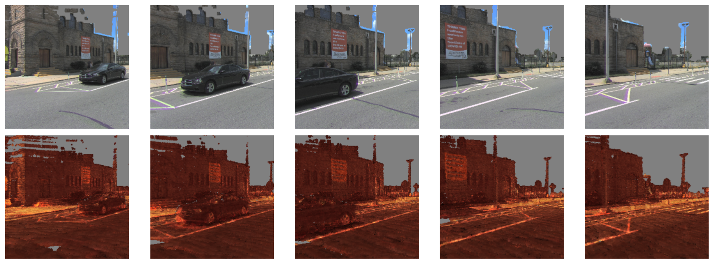
Additionally, the stable diffusion 2.1 guided SDS loss fails on prompts like "buildings on fire" as it simply makes the entire
scene red in color. An example of this failure case is seen in Figure. 8 where the entire scene is turned red instead of just
the buildings. This limits our approach to effects which have global scene changes like weather based effects.
5. Conclusion
In our work, we proposed a framework for generating novel and customizable street views by leveraging a self-driving dataset. Using our method, we eliminate the need for specialized data collection, manual image-alignment and hand- crafted algorithms for stitching street images together. We use a PointNeRF based representation of the 3D scene and provide a way of tuning the point embeddings for achieving a desired rendering of the scene. While our framework is modular and generalized, there is still scope for improvement. We currently do not model the view dependent effects and using a PointNet like architecture can help add view dependence in the color MLP and yield better results. In the current pipeline, LiDAR points rigidly define the geometry of the scene but their location can also be optimized during training in future work.
6. References
[1] J. T. Barron, B. Mildenhall, D. Verbin, P. P. Srinivasan, and P. Hedman, “Mip-nerf 360: Unbounded anti-aliased
neural radiance fields,” CVPR, 2022.
[2] M. Tancik, V. Casser, X. Yan, S. Pradhan, B. Mildenhall, P. Srinivasan, J. T. Barron, and H. Kretzschmar,
“Block-nerf: Scalable large scene neural view synthesis,” in IEEE Conference on Computer Vision and Pattern
Recognition (CVPR), 2022, pp. 1, 2, 4, 5, 6, 7, 8.
[3] K. Deng, A. Liu, J.-Y. Zhu, and D. Ramanan, “Depth-supervised nerf: Fewer views and faster training for free,”
2021. [Online]. Available: https://arxiv.org/abs/2107.02791
[4] Q. Xu, Z. Xu, J. Philip, S. Bi, Z. Shu, K. Sunkavalli, and U. Neumann, “Point-nerf: Point-based neural radiance
fields,” in IEEE Conference on Computer Vision and Pattern Recognition (CVPR), 2022, pp. 1, 2, 3, 4, 6, 8.
[5] M.-F. Chang, A. Sharma, M. Kaess, and S. Lucey, “Neural Radiance Fields with LiDAR Maps,” in International
Conference on Computer Vision, 2023.
[6] B. Wilson, W. Qi, T. Agarwal, J. Lambert, J. Singh, S. Khandelwal, B. Pan, R. Kumar, A. Hartnett, J. K. Pontes,
D. Ramanan, P. Carr, and J. Hays, “Argoverse 2: Next generation datasets for self-driving perception and fore-
casting,” in Conference on Neural Information Processing Systems (NeurIPS), 2021.
[7] P. Isola, J.-Y. Zhu, T. Zhou, and A. A. Efros, “Image-to-image translation with conditional adversarial networks,”
2018.
[8] R. Rombach, A. Blattmann, D. Lorenz, P. Esser, and B. Ommer, “High-resolution image synthesis with latent
diffusion models,” 2022.
[9] B. Poole, A. Jain, J. T. Barron, and B. Mildenhall, “Dreamfusion: Text-to-3d using 2d diffusion,” 2022.